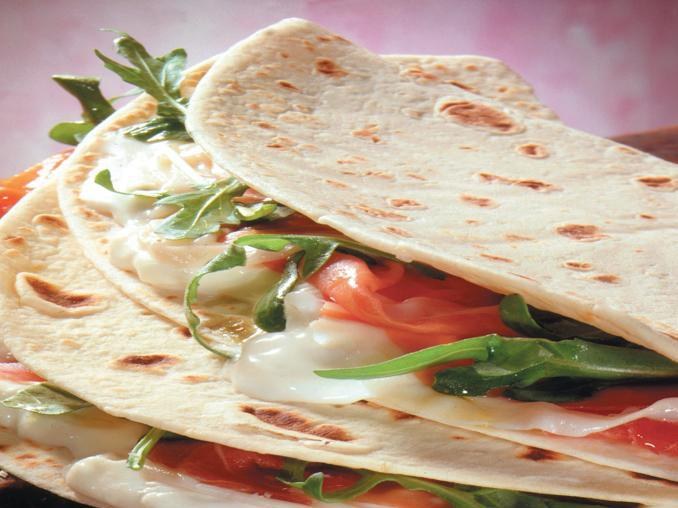

Piadina farcita

An easy and delicious Italian recipe, for all tastes and for all seasons.
Ingredients
- Piadina romagnola
- Rucola
- Squacquerone or stracchino cheese
- Finely sliced prosciutto crudo
Steps
- Clean the rocket by removing the tough parts of the stalks, wash and dry it by dabbing it with a tea towel or salad spinner
- Season the piadina as it is cooked according to the following recipe:
- Spread the entire piada with a layer of squacquerone cheese.
- Place the prosciutto and rocket on half of the piada.
- Close and serve immediately.